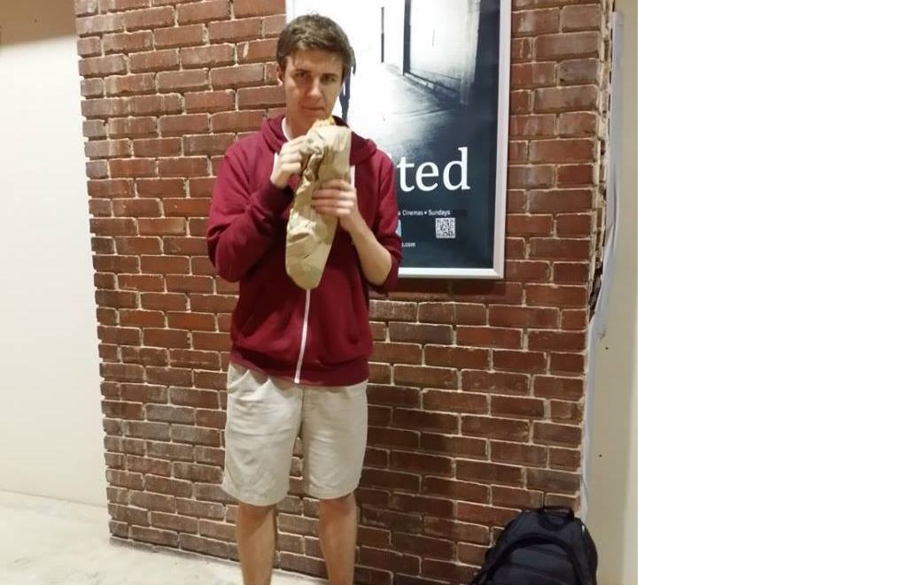
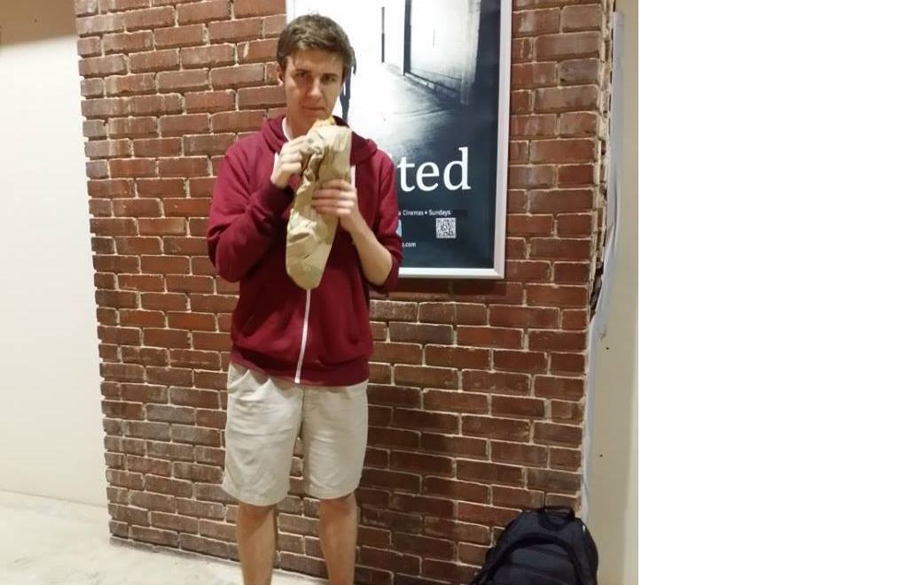

The composite image of Trump and I composite.bmp is created with the following command:
./Assignment1.exe --in mricha56_HTML/trump.jpg --composite mricha56_HTML/me.jpg mricha56_HTML/matte.jpg --out mricha56_HTML/composite.bmp
 

#!/bin/bash i=0 while [ $i -lt 10 ]; do ./Assignment1.exe --in mricha56_HTML/F.bmp --bnMorph mricha56_HTML/F_scaled_2d.bmp mricha56_HTML/f_multi_line_scale.txt 0.$i --out mricha56_HTML/Fs/$i.bmp echo 0.$i i=$[ $i + 1 ] done